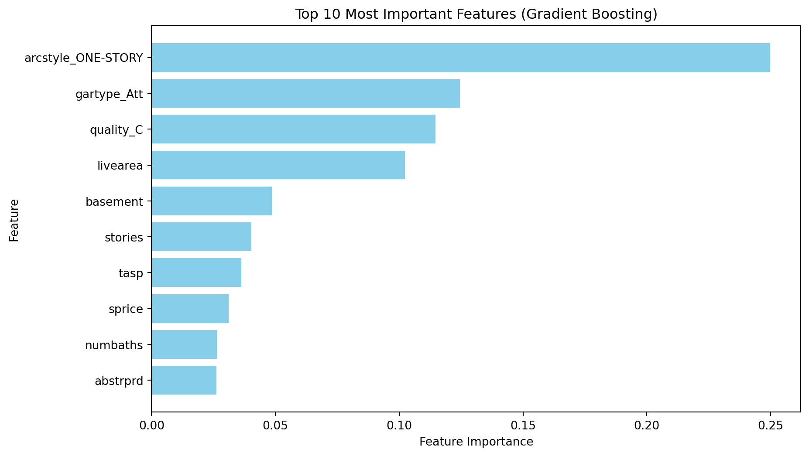

Our model leverages Gradient Boosting techniques to accurately classify whether homes in Colorado were built before or after 1980, achieving a high accuracy of 93%. By analyzing key features of homes, the model effectively distinguishes older homes with minimal false predictions. This solution is both accurate and actionable, helping you meet your public safety goals efficiently.
Question|Task 1
Create 2-3 charts that evaluate potential relationships between the home variables and before1980. Explain what you learn from the charts that could help a machine learning algorithm.
The first chart can contribute to the classification of homes built before 1980, as there is a cluster around the lower value of finished basements and a smaller living area for that predicted time.
Chart 2 indicates that the number of stories is a srong indicator for homes built pre 1980, because it shows most homes to be one story compared to two story which shows about half the number of one story homes.
Chart 3 shows stories, living area, and number of bedrooms to be the features with the strongest correlation to homes built before 1980 and therefore should be prioritized. Features like finished basement does not have as strong of a correlation but is still useful when combined with other variables.
# Include and execute your code hereimport pandas as pdfrom lets_plot import*LetsPlot.setup_html()import sys!{sys.executable} -m pip install scikit-learn# %% # scikit learn fromsfrom sklearn.model_selection import train_test_splitfrom sklearn import treefrom sklearn.naive_bayes import GaussianNBfrom sklearn.ensemble import GradientBoostingClassifierfrom sklearn import metrics
Requirement already satisfied: scikit-learn in /opt/hostedtoolcache/Python/3.12.8/x64/lib/python3.12/site-packages (1.6.0)
Requirement already satisfied: numpy>=1.19.5 in /opt/hostedtoolcache/Python/3.12.8/x64/lib/python3.12/site-packages (from scikit-learn) (2.2.0)
Requirement already satisfied: scipy>=1.6.0 in /opt/hostedtoolcache/Python/3.12.8/x64/lib/python3.12/site-packages (from scikit-learn) (1.14.1)
Requirement already satisfied: joblib>=1.2.0 in /opt/hostedtoolcache/Python/3.12.8/x64/lib/python3.12/site-packages (from scikit-learn) (1.4.2)
Requirement already satisfied: threadpoolctl>=3.1.0 in /opt/hostedtoolcache/Python/3.12.8/x64/lib/python3.12/site-packages (from scikit-learn) (3.5.0)
#newfrom sklearn.ensemble import RandomForestClassifierfrom sklearn.metrics import classification_reportX_train = X_train.drop(columns=['parcel'], errors='ignore')X_test = X_test.drop(columns=['parcel'], errors='ignore')# Instantiate the modelmodel = RandomForestClassifier(n_estimators=100, random_state=42)# Fit the model on the training data#model.fit(X_train, y_train)# Make predictions on the test data#y_pred = model.predict(X_test)# Evaluate the model#print(classification_report(y_test, y_pred))
# Predict on the test set#y_pred = model.predict(X_test)
from sklearn.metrics import classification_report# Detailed classification report#print(classification_report(y_test, y_pred))
Chart 1:
# Scatterplot of livearea vs finbsmnt by before1980chart1 = ggplot(h_subset, aes(x='livearea', y='finbsmnt', color='before1980')) + geom_point() +\ ggtitle('Living Area vs. Finished Basement by Before1980') +\ xlab('Living Area (sq ft)') + ylab('Finished Basement Area (sq ft)')chart1.show()
## Question 1|Chart 3# Distribution of stories by before1980chart3 = ggplot(h_subset, aes(x='stories', fill='before1980')) +\ geom_bar(position='dodge') +\ ggtitle('Number of Stories by Before1980') +\ xlab('Number of Stories') + ylab('Count')chart3.show()
Question|Task 2
Build a classification model labeling houses as being built “before 1980” or “during or after 1980”. Your goal is to reach or exceed 90% accuracy. Explain your final model choice (algorithm, tuning parameters, etc) and describe what other models you tried.
The model I chose is the Gradient Boosting Classifier. It’s accuracy is 93.13% comared to the next best, Decision Tree Classifier with 90.05%. I also did a Logistic Regression model and a Random Forest model. However neither reached 90%. I included all models below to show the work.
Logistic Regression Model
# Drop the parcel column#X_train = X_train.drop('parcel', axis=1)#X_test = X_test.drop('parcel', axis=1)from sklearn.linear_model import LogisticRegressionfrom sklearn.metrics import accuracy_score# Train Logistic Regressionlog_model = LogisticRegression(max_iter=1000, random_state=76)log_model.fit(X_train, y_train.values.ravel()) # Flatten y_train for compatibility# Predict and evaluatey_pred_log = log_model.predict(X_test)accuracy_log = accuracy_score(y_test, y_pred_log)print(f"Logistic Regression Accuracy: {accuracy_log:.2%}")
Logistic Regression Accuracy: 83.78%
/opt/hostedtoolcache/Python/3.12.8/x64/lib/python3.12/site-packages/sklearn/linear_model/_logistic.py:465: ConvergenceWarning:
lbfgs failed to converge (status=1):
STOP: TOTAL NO. of ITERATIONS REACHED LIMIT.
Increase the number of iterations (max_iter) or scale the data as shown in:
https://scikit-learn.org/stable/modules/preprocessing.html
Please also refer to the documentation for alternative solver options:
https://scikit-learn.org/stable/modules/linear_model.html#logistic-regression
Decision Treel Model
from sklearn.tree import DecisionTreeClassifier# Train Decision Treedt_model = DecisionTreeClassifier(max_depth=10, random_state=76)dt_model.fit(X_train, y_train.values.ravel())# Predict and evaluatey_pred_dt = dt_model.predict(X_test)accuracy_dt = accuracy_score(y_test, y_pred_dt)print(f"Decision Tree Accuracy: {accuracy_dt:.2%}")
Decision Tree Accuracy: 90.05%
Random Forest Model
from sklearn.ensemble import RandomForestClassifier# Train Random Forestrf_model = RandomForestClassifier(n_estimators=100, max_depth=10, random_state=76)rf_model.fit(X_train, y_train.values.ravel())# Predict and evaluatey_pred_rf = rf_model.predict(X_test)accuracy_rf = accuracy_score(y_test, y_pred_rf)print(f"Random Forest Accuracy: {accuracy_rf:.2%}")
Justify your classification model by discussing the most important features selected by your model. This discussion should include a feature importance chart and a description of the features.
The most important feature selected from the Gradient Boosting model and as shown in the chart below is arcstyle_ONE-STORY. Homes with a one-story architectural style were the most important feature. One-story homes are more common in older constructions, making this a strong predictor.
The next most important feature is gartype_Att. Attached garages are more common in newer homes, helping differentiate homes built before and after 1980.
The third most important is homes with quality_C classification reflect specific building standards or materials, often indicative of construction time periods.
The livearea. The total living area is a significant feature, as older homes often have smaller living spaces.
The basement. The presence and size of basements contribute to distinguishing between older and newer homes.
How many stories in a home reflects architectural trends, with single-story homes appearing more often in older constructions.
The remaining features include tasp, sprice, numbaths, and abstrprd. These last few contribute by informing us of market trends, home characteristics, the sales price, and time-sensitive data.
This model was able to identify specific trends in the construction of houses built before 1980. The combination of the features identified can give the client a strong predictor of whether a house was built pre 1980.
import pandas as pdimport matplotlib.pyplot as plt# Extract feature importancesimportances = gb_model.feature_importances_feature_names = X_train.columns# Create a DataFrame of features and their importanceimportance_df = pd.DataFrame({'Feature': feature_names, 'Importance': importances})importance_df = importance_df.sort_values(by='Importance', ascending=False)# Display the top 10 featuresprint(importance_df.head(10))
# Plot the top 10 featuresplt.figure(figsize=(10, 6))plt.barh(importance_df['Feature'][:10][::-1], importance_df['Importance'][:10][::-1], color='skyblue')plt.title('Top 10 Most Important Features (Gradient Boosting)')plt.xlabel('Feature Importance')plt.ylabel('Feature')plt.show()

Question|Task 4
Describe the quality of your classification model using 2-3 different evaluation metrics. You also need to explain how to interpret each of the evaluation metrics you use.
I am using the Accuracy, Precision/Recall (F1-Score), and the Confusion Matrix. The accuracy matrix shows the overall measure of the model’s performance. In this case, 93.13%. This means 93% of all homes were correctly classified as pre-1980 or post-1980.
The Precision/Recall(F1-Score) Shows the scores for precision, recall, and f1-score, which are the following range respectively: .9, .91, .91 and .95, .94, .95. It then shows the accuracy, magro average, and the weighted average of those scores, all of them being 93%. Precision ensures it doesn’t overpredict values. High recall ensures the model correctly identifies most homes. F1-Score balances Precision and Recall, showing strong performance in both.
Between the actual and predicted number, the confusion matrix shows pre-1980 correctly classified at 4,755. Post-1980 correctly classified at 2,714. Post-1980 misclassified as Pre-1980 at 266. Pre-1980 misclassified as Post-1980 at 285. The result is that the model performs well, as it has low misclassifications compared to the number correctly classified.
from sklearn.metrics import accuracy_score# Accuracyaccuracy = accuracy_score(y_test, y_pred_gb)print(f"Accuracy: {accuracy:.2%}")
Accuracy: 93.03%
from sklearn.metrics import classification_report# Classification reportprint(classification_report(y_test, y_pred_gb))